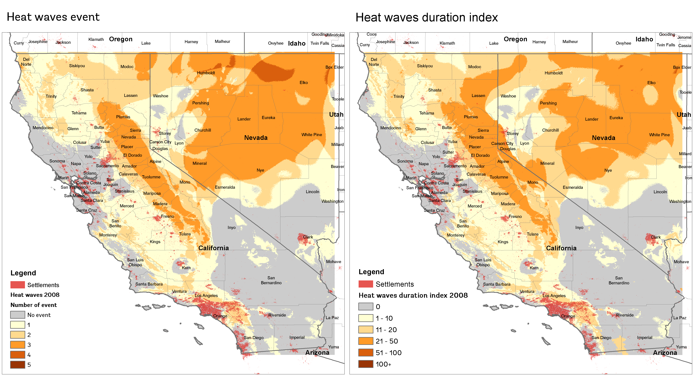
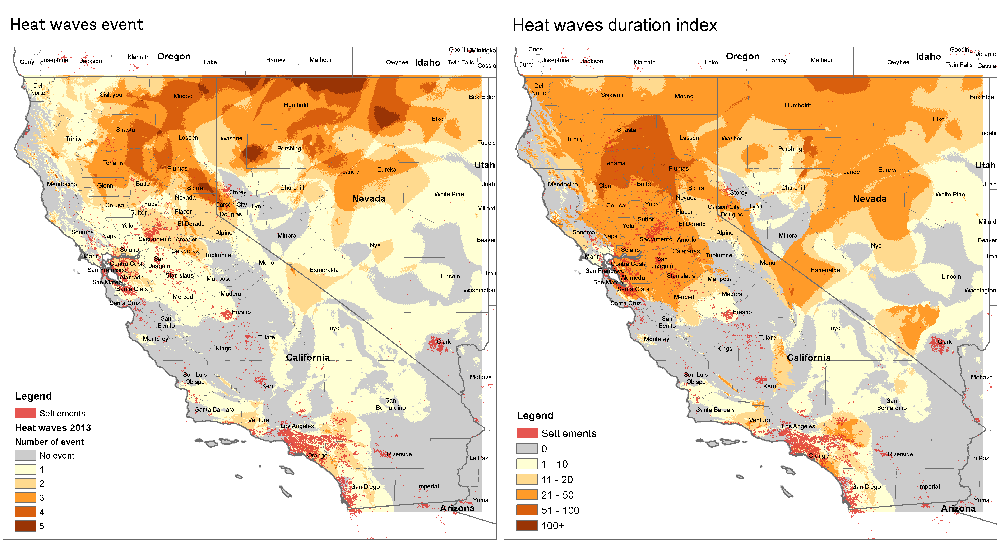
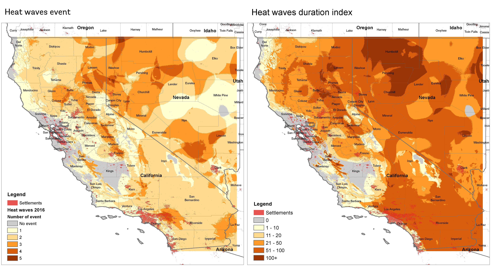

Heat wave duration index (HWDI) based on daily temperature data
Contents
Heat wave duration index (HWDI) based on daily temperature data#
The World Meteorological Organization (WMO), defines a heat wave as five or more consecutive days of prolonged heat in which the daily maximum temperature is higher than the average maximum temperature by 5°C (9°F) or more.
To measure the heat wave index, one of recommendation of the Intergovernmental Panel on Climate Change (IPCC) was to use the heat wave duration index (HWDI). This index has been defined as as the maximum period in each year of at least 5 consecutive days where the maximum temperature is at least 5°C warmer than the daily climatology.
How-to?#
To calculate the HWDI, you need to have timeseries daily maximum temperature data and tools to calculate the index. Please follow below procedure to get started.
Tools#
Windows Subsystem for Linux (WSL) - https://docs.microsoft.com/en-us/windows/wsl/install. Since CDO is not available for Windows, the easiest way to use it is via the WSL. If you are on Linux/macOS, then you are good to go.
Anaconda or Miniconda
Climate Data Operator (CDO) - https://code.mpimet.mpg.de/projects/cdo, installed using
conda install -c conda-forge cdo. Please create a new environment to install CDO, just to make sure the CDO will not breaking your current python environment.
Data#
Global high resolution (30 arc sec ~ 1km) daily maximum temperature data (
tasmax), 1979 - 2016, available as 1 month data per 1 file, from CHELSA - https://chelsa-climate.org/, downloaded from https://data.isimip.org/datasets/92b05291-fbe5-4ed2-b3df-29ff0cded9f2/.
Case#
California, US
Step-by-step#
Lets start!
NOTE
To follow below step, you need to download CHELSA
tasmaxdata from above link. Total size fortasmaxdata is 1.2TB, please make sure you have bandwidth and unlimited data packageOr you can proceed directly to step 2, using pre-computed result for step 1 which is available in folder 01_tasmax, with size 9.75GB. (upload is in progress)
Also make sure you have plenty of storage. Step 2 and 3 will produce intermediate output each around 40GB, step 4 and 5 each around 80GB, step 6 around 2GB and step 7 around 430MB.
Clip global data using bounding box
for fl in ./00_chelsa_global_tasmax/*.nc; do cdo sellonlatbox,-8.3,-7.6,12.3,12.9 $fl ./01_tasmax_/usa_california_`basename $fl`; done
Merge monthly data into annual
for year in {1979..2016}; do cdo mergetime ./01_tasmax/usa_california_chelsa-w5e5v1.0_obsclim_tasmax_30arcsec_global_daily_${year}??.nc ./02_tasmax_annual/usa_california_chelsa_daily_tasmax_${year}.nc; done
Delete data who has 29th February.
According to https://code.mpimet.mpg.de/boards/2/topics/9522, dealing with leap years in climate model output has caused many scientists to stumble, since there are just about 25% February 29ths in the time series so that the sample size for February 29th is just not big enough. Therefore, remove it from the time series before analysing it.
for year in {1979..2016}; do cdo -delete,month=2,day=29 ./02_tasmax_annual/usa_california_chelsa_daily_tasmax_${year}.nc ./03_tasmax_del29feb/usa_california_chelsa_daily_tasmax_${year}.nc; done
below script also works, using
del29dfebfor year in {1979..2016}; do cdo -del29feb ./02_tasmax_annual/usa_california_chelsa_daily_tasmax_${year}.nc ./03_tasmax_del29feb/usa_california_chelsa_daily_tasmax_${year}.nc; done
Convert Kelvin to degree Celsius and don’t forget to change the variable (here
tasmax) units, too. Combining operators:for year in {1979..2016}; do cdo -b 32 -setattribute,tasmax@units="degC" -addc,-273.15 ./03_tasmax_del29feb/usa_california_chelsa_daily_tasmax_${year}.nc ./04_tasmax_celsius/usa_california_chelsa_daily_tasmax_${year}.nc; done
Merge all nc files result from point 4 into single nc.
cdo mergetime ./04_tasmax_celsius/usa_*.nc ./05_tasmax_all/usa_california_chelsa_daily_tasmax_1979_2016.nc
Calculate the mean TXnorm of daily maximum temperatures for any period used as reference
cdo ydrunmean,5,rm=c ./05_tasmax_all/usa_california_chelsa_daily_tasmax_1979_2016.nc ./06_tasmax_meanofreference/usa_california_chelsa_daily_tasmaxnorm_ref_1979_2016.ncOther alternative is to use 90th percentile of daily max temperature of a five windows centred. If you are interested to compute the running multi-year daily 90th percentile over all input timesteps for a running window of five days, use:
cdo ydrunmin,5 infile minfile cdo ydrunmax,5 infile maxfile cdo ydrunpctl,90,5 infile minfile maxfile outfile
Calculate annual heat wave duration index w.r.t mean of reference period
for year in {1979..2016}; do cdo eca_hwdi ./04_tasmax_celsius/usa_california_chelsa_daily_tasmax_${year}.nc ./06_tasmax_meanofreference/usa_california_chelsa_daily_tasmaxnorm_ref_1979_2016.nc ./07_hwdi/usa_california_chelsa_daily_hwdi_${year}.nc; done
Result#
2008

Reference:
2013

Reference:
2016

Reference:
References#
CDO operators
sellonlatbox- Select a longitude/latitude box. https://code.mpimet.mpg.de/projects/cdo/embedded/index.html#x1-1760002.3.5mergetime- Merge datasets sorted by date and time. https://code.mpimet.mpg.de/projects/cdo/embedded/index.html#x1-1130002.2.8delete- Delete fields. https://code.mpimet.mpg.de/projects/cdo/embedded/index.html#x1-1540002.3.1del29feb- the special CDO operator to remove all the ‘29th of february’. This operator is not yet documented.addc- Add a constant. https://code.mpimet.mpg.de/projects/cdo/embedded/index.html#x1-3360002.7.3setattribute- Set attribute. https://code.mpimet.mpg.de/projects/cdo/embedded/index.html#x1-2380002.6.1ydrunmean- Multi year daily running mean. https://code.mpimet.mpg.de/projects/cdo/embedded/index.html#x1-5860002.8.37rm- The read_method can be set tocforcircularwhich takes into account the last time steps at the begin of the time period and vise versa. Otherwise, the first and last time steps are not used as often as the other time steps in the calculations.eca_hwdi- Heat wave duration index. https://code.mpimet.mpg.de/projects/cdo/embedded/cdo_eca.pdf